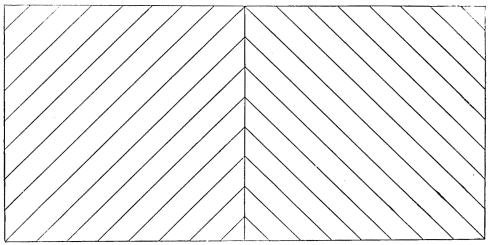
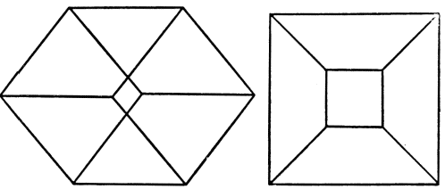

Chapter 13: Attention¶
13.1 Attention¶
The Narrowness of Consciousness.—One of the most extraordinary facts of our life is that, although we are besieged at every moment by impressions from our whole sensory surface, we notice so very small a part of them. The sum total of our impressions never enters into our experience, consciously so called, which runs through this sum total like a tiny rill through a broad flowery mead. Yet the physical impressions which do not count are there as much as those which do, and affect our sense-organs just as energetically. Why they fail to pierce the mind is a mystery, which is only named and not explained when we invoke die Enge des Bewusstseins, 'the narrowness of consciousness,' as its ground.
Its Physiological Ground.—Our consciousness certainly is narrow, when contrasted with the breadth of our sensory surface and the mass of incoming currents which are at all times pouring in. Evidently no current can be recorded in conscious experience unless it succeed in penetrating to the hemispheres and filling their pathways by the processes get up. When an incoming current thus occupies the hemispheres with its consequences, other currents are for the time kept out. They may show their faces at the door, but are turned back until the actual possessors of the place are tired. Physiologically, then, the narrowness of consciousness seems to depend on the fact that the activity of the hemispheres tends at all times to be a consolidated and unified affair, determinable now by this current and now by that, but determinable only as a whole. The ideas correlative to the reigning system of processes are those which are said to 'interest' us at the time; and thus that selective character of our attention on which so much stress was laid on pp. 173 ff. appears to find a physiological ground. At all times, however, there is a liability to disintegration of the reigning system. The consolidation is seldom quite complete, the excluded currents are not wholly abortive, their presence affects the 'fringe' and margin of our thought.
Dispersed Attention.—Sometimes, indeed, the normal consolidation seems hardly to exist. At such moments it is possible that cerebral activity sinks to a minimum. Most of us probably fall several times a day into a fit somewhat like this: The eyes are fixed on vacancy, the sounds of the world melt into confused unity, the attention is dispersed so that the whole body is felt, as it were, at once, and the foreground of consciousness is filled, if by anything, by a sort of solemn sense of surrender to the empty passing of time. In the dim background of our mind we know meanwhile what we ought to be doing: getting up, dressing ourselves, answering the person who has spoken to us, trying to make the next step in our reasoning. But somehow we cannot start; the pensée de derrière la tête fails to pierce the shell of lethargy that wraps our state about. Every moment we expect the spell to break, for we know no reason why it should continue. But it does continue, pulse after pulse, and we float with it, until—also without reason that we can discover—an energy is given, something—we know not what—enables us to gather ourselves together, we wink our eyes, we shake our heads, the background-ideas become effective, and the wheels of life go round again.
This is the extreme of what is called dispersed attention. Between this extreme and the extreme of concentrated attention, in which absorption in the interest of the moment is so complete that grave bodily injuries may be unfelt, there are intermediate degrees, and these have been studied experimentally. The problem is known as that of The Span of Consciousness.—How many objects can we attend to at once when they are not embraced in one conceptual system? Prof. Cattell experimented with combinations of letters exposed to the eye for so short a fraction of a second that attention to them in succession seemed to be ruled out. When the letters formed familiar words, three times as many of them could be named as when their combination was meaningless. If the words formed a sentence, twice as many could be caught as when they had no connection. "The sentence was then apprehended as a whole. If not apprehended thus, almost nothing is apprehended of the several words; but if the sentence as a whole is apprehended, then the words appear very distinct."
A word is a conceptual system in which the letters do not enter consciousness separately, as they do when apprehended alone. A sentence flashed at once upon the eye is such a system relatively to its words. A conceptual system may mean many sensible objects, may be translated later into them, but as an actual existent mental state, it does not consist of the consciousnesses of these objects. When I think of the word man as a whole, for instance, what is in my mind is something different from what is there when I think of the letters m, a, and n, as so many disconnected data.
When data are so disconnected that we have no conception which embraces them together it is much harder to apprehend several of them at once, and the mind tends to let go of one whilst it attends to another. Still, within limits this can be avoided. M. Paulhan has experimented on the matter by declaiming one poem aloud whilst he repeated a different one mentally, or by writing one sentence whilst speaking another, or by performing calculations on paper whilst reciting poetry. He found that "the most favorable condition for the doubling of the mind was its simultaneous application to two heterogeneous operations. Two operations of the same sort, two multiplications, two recitations, or the reciting of one poem and writing of another, render the process more uncertain and difficult."
M. Paulhan compared the time occupied by the same two operations done simultaneously or in succession, and found that there was often a considerable gain of time from doing them simultaneously. For instance:
"I multiply 421 312 212 by 2; the operation takes 6 seconds; the recitation of four verses also takes 6 seconds. But the two operations done at once only take 6 seconds, so that there is no loss of time from combining them."
If, then, by the original question, how many objects can we attend to at once, be meant how many entirely disconnected systems or processes can go on simultaneously, the answer is, not easily more than one, unless the processes are very habitual; but then two, or even three, without very much oscillation of the attention. Where, however, the processes are less automatic, as in the story of Julius Cæsar dictating four letters whilst he writes a fifth, there must be a rapid oscillation of the mind from one to the next, and no consequent gain of time.
When the things to be attended to are minute sensations, and when the effort is to be exact in noting them, it is found that attention to one interferes a good deal with the perception of the other. A good deal of fine work has been done in this field by Professor Wundt. He tried to note the exact position on a dial of a rapidly revolving hand, at the moment when a bell struck. Here were two disparate sensations, one of vision, the other of sound, to be noted together. But it was found that in a long and patient research, the eye-impression could seldom or never be noted at the exact moment when the bell actually struck. An earlier or a later point were all that could be seen.
The Varieties of Attention.—Attention may be divided into kinds in various ways. It is either to
a) Objects of sense (sensorial attention); or to
b) Ideal or represented objects (intellectual attention). It is either
c) Immediate; or
d) Derived: immediate, when the topic or stimulus is interesting in itself, without relation to anything else; derived, when it owes its interest to association with some other immediately interesting thing. What I call derived attention has been named 'apperceptive' attention. Furthermore, Attention may be either
e) Passive, reflex, involuntary, effortless; or
f) Active and voluntary.
Voluntary attention is always derived; we never make an effort to attend to an object except for the sake of some remote interest which the effort will serve. But both sensorial and intellectual attention may be either passive or voluntary.
In involuntary attention of the immediate sensorial sort the stimulus is either a sense-impression, very intense, voluminous, or sudden; or it is an instinctive stimulus, a perception which, by reason of its nature rather than its mere force, appeals to some one of our congenital impulses and has a directly exciting quality. In the chapter on Instinct we shall see how these stimuli differ from one animal to another, and what most of them are in man: strange things, moving things, wild animals, bright things, pretty things, metallic things, words, blows, blood, etc., etc., etc.
Sensitiveness to immediately exciting sensorial stimuli characterizes the attention of childhood and youth. In mature age we have generally selected those stimuli which are connected with one or more so-called permanent interests, and our attention has grown irresponsive to the rest. But childhood is characterized by great active energy, and has few organized interests by which to meet new impressions and decide whether they are worthy of notice or not, and the consequence is that extreme mobility of the attention with which we are all familiar in children, and which makes of their first lessons such chaotic affairs. Any strong sensation whatever produces accommodation of the organs which perceive it, and absolute oblivion, for the time being, of the task in hand. This reflex and passive character of the attention which, as a French writer says, makes the child seem to belong less to himself than to every object which happens to catch his notice, is the first thing which the teacher must overcome. It never is overcome in some people, whose work, to the end of life, gets done in the interstices of their mind-wandering.
The passive sensorial attention is derived when the impression, without being either strong or of an instinctively exciting nature, is connected by previous experience and education with things that are so. These things may be called the motives of the attention. The impression draws an interest from them, or perhaps it even fuses into a single complex object with them; the result is that it is brought into the focus of the mind. A faint tap per se is not an interesting sound; it may well escape being discriminated from the general rumor of the world. But when it is a signal, as that of a lover on the window-pane, hardly will it go unperceived. Herbart writes:
"How a bit of bad grammar wounds the ear of the purist! How a false note hurts the musician! or an offence against good manners the man of the world! How rapid is progress in a science when its first principles have been so well impressed upon us that we reproduce them mentally with perfect distinctness and ease! How slow and uncertain, on the other hand, is our learning of the principles themselves, when familiarity with the still more elementary percepts connected with the subject has not given us an adequate predisposition!—Apperceptive attention may be plainly observed in very small children when, hearing the speech of their elders, as yet unintelligible to them, they suddenly catch a single known word here and there, and repeat it to themselves; yes! even in the dog who looks round at us when we speak of him and pronounce his name. Not far removed is the talent which mind-wandering school-boys display during the hours of instruction, of noticing every moment in which the teacher tells a story. I remember classes in which, instruction being uninteresting, and discipline relaxed, a buzzing murmur was always to be heard, which invariably stopped for as long a time as an anecdote lasted. How could the boys, since they seemed to hear nothing, notice when the anecdote began? Doubtless most of them always heard something of the teacher's talk; but most of it had no connection with their previous knowledge and occupations, and therefore the separate words no sooner entered their consciousness than they fell out of it again; but, on the other hand, no sooner did the words awaken old thoughts, forming strongly-connected series with which the new impression easily combined, than out of new and old together a total interest resulted which drove the vagrant ideas below the threshold of consciousness, and brought for a while settled attention into their place."
Involuntary intellectual attention is immediate when we follow in thought a train of images exciting or interesting per se; derived, when the images are interesting only as means to a remote end, or merely because they are associated with something which makes them dear. The brain-currents may then form so solidly unified a system, and the absorption in their object be so deep, as to banish not only ordinary sensations, but even the severest pain. Pascal, Wesley, Robert Hall, are said to have had this capacity. Dr. Carpenter says of himself that "he has frequently begun a lecture whilst suffering neuralgic pain so severe as to make him apprehend that he would find it impossible to proceed; yet no sooner has he by a determined effort fairly launched himself into the stream of thought, than he has found himself continuously borne along without the least distraction, until the end has come, and the attention has been released; when the pain has recurred with a force that has overmastered all resistance, making him wonder how he could have ever ceased to feel it."1
Voluntary Attention.—Dr. Carpenter speaks of launching himself by a determined effort. This effort characterizes what we called active or voluntary attention. It is a feeling which everyone knows, but which most people would call quite indescribable. We get it in the sensorial sphere whenever we seek to catch an impression of extreme faintness, be it of sight, hearing, taste, smell, or touch; we get it whenever we seek to discriminate a sensation merged in a mass of others that are similar; we get it whenever we resist the attractions of more potent stimuli and keep our mind occupied with some object that is naturally unimpressive. We get it in the intellectual sphere under exactly similar conditions: as when we strive to sharpen and make distinct an idea which we but vaguely seem to have; or painfully discriminate a shade of meaning from its similars; or resolutely hold fast to a thought so discordant with our impulses that, if left unaided, it would quickly yield place to images of an exciting and impassioned kind. All forms of attentive effort would be exercised at once by one whom we might suppose at a dinner-party resolutely to listen to a neighbor giving him insipid and unwelcome advice in a low voice, whilst all around the guests were loudly laughing and talking about exciting and interesting things.
There is no such thing as voluntary attention sustained for more than a few seconds at a time. What is called sustained voluntary attention is a repetition of successive efforts which bring back the topic to the mind. The topic once brought back, if a congenial one, develops; and if its development is interesting it engages the attention passively for a time. Dr. Carpenter, a moment back, described the stream of thought, once entered, as 'bearing him along.' This passive interest may be short or long. As soon as it flags, the attention is diverted by some irrelevant thing, and then a voluntary effort may bring it back to the topic again; and so on, under favorable conditions, for hours together. During all this time, however, note that it is not an identical object in the psychological sense, but a succession of mutually related objects forming an identical topic only, upon which the attention is fixed. No one can possibly attend continuously to an object that does not change.
Now there are always some objects that for the time being will not develop. They simply go out; and to keep the mind upon anything related to them requires such incessently renewed effort that the most resolute Will ere long gives out and lets its thoughts follow the more stimulating solicitations after it has withstood them for what length of time it can. There are topics known to every man from which he shies like a frightened horse, and which to get a glimpse of is to shun. Such are his ebbing assets to the spendthrift in full career. But why single out the spendthrift, when to every man actuated by passion the thought of interests which negate the passion can hardly for more than a fleeting instant stay before the mind? It is like 'memento mori' in the heydey of the pride of life. Nature rises at such suggestions, and excludes them from the view:—How long, O healthy reader, can you now continue thinking of your tomb?—In milder instances the difficulty is as great, especially when the brain is fagged. One snatches at any and every passing pretext, no matter how trivial or external, to escape from the odiousness of the matter in hand. I know a person, for example, who will poke the fire, set chairs straight, pick dust-specks from the floor, arrange his table, snatch up the newspaper, take down any book which catches his eye, trim his nails, waste the morning anyhow, in short, and all without premeditation,—simply because the only thing he ought to attend to is the preparation of a noonday lesson in formal logic which he detests. Anything but that!

Once more, the object must change. When it is one of sight, it will actually become invisible; when of hearing, inaudible,—if we attend to it too unmovingly. Helmholtz, who has put his sensorial attention to the severest tests, by using his eyes on objects which in common life are expressly overlooked, makes some interesting remarks on this point in his section on retinal rivalry. The phenomenon called by that name is this, that if we look with each eye upon a different picture (as in the annexed stereoscopic slide), sometimes one picture, sometimes the other, or parts of both, will come to consciousness, but hardly ever both combined. Helmholtz now says:
"I find that I am able to attend voluntarily, now to one and now to the other system of lines; and that then this system remains visible alone for a certain time, whilst the other completely vanishes. This happens, for example, whenever I try to count the lines first of one and then of the other system.... But it is extremely hard to chain the attention down to one of the systems for long, unless we associate with our looking some distinct purpose which keeps the activity of the attention perpetually renewed. Such a one is counting the lines, comparing their intervals, or the like. An equilibrium of the attention, persistent for any length of time, is under no circumstances attainable. The natural tendency of attention when left to itself is to wander to ever new things; and so soon as the interest of its object is over, so soon as nothing new is to be noticed there, it passes, in spite of our will, to something else. If we wish to keep it upon one and the same object, we must seek constantly to find out something new about the latter, especially if other powerful impressions are attracting us away."
These words of Helmholtz are of fundamental importance. And if true of sensorial attention, how much more true are they of the intellectual variety! The conditio sine quâ non of sustained attention to a given topic of thought is that we should roll it over and over incessantly and consider different aspects and relations of it in turn. Only in pathological states will a fixed and ever monotonously recurring idea possess the mind.
Genius and Attention.—And now we can see why it is that what is called sustained attention is the easier, the richer in acquisitions and the fresher and more original the mind. In such minds, subjects bud and sprout and grow. At every moment, they please by a new consequence and rivet the attention afresh. But an intellect unfurnished with materials, stagnant, unoriginal, will hardly be likely to consider any subject long. A glance exhausts its possibilities of interest. Geniuses are commonly believed to excel other men in their power of sustained attention. In most of them, it is to be feared, the so-called 'power' is of the passive sort. Their ideas coruscate, every subject branches infinitely before their fertile minds, and so for hours they may be rapt. But it is their genius making them attentive, not their attention making geniuses of them. And, when we come down to the root of the matter, we see that they differ from ordinary men less in the character of their attention than in the nature of the objects upon which it is successively bestowed. In the genius, these form a concatenated series, suggesting each other mutually by some rational law. Therefore we call the attention 'sustained' and the topic of meditation for hours 'the same.' In the common man the series is for the most part incoherent, the objects have no rational bond, and we call the attention wandering and unfixed.
It is probable that genius tends actually to prevent a man from acquiring habits of voluntary attention, and that moderate intellectual endowments are the soil in which we may best expect, here as elsewhere, the virtues of the will, strictly so called, to thrive. But, whether the attention come by grace of genius or by dint of will, the longer one does attend to a topic the more mastery of it one has. And the faculty of voluntarily bringing back a wandering attention over and over again is the very root of judgment, character, and will. No one is compos sui if he have it not. An education which should improve this faculty would be the education par excellence. But it is easier to define this ideal than to give practical directions for bringing it about. The only general pedagogic maxim bearing on attention is that the more interests the child has in advance in the subject, the better he will attend. Induct him therefore in such a way as to knit each new thing on to some acquisition already there; and if possible awaken curiosity, so that the new thing shall seem to come as an answer, or part of an answer, to a question preëxisting in his mind.
The Physiological Conditions of Attention.—These seem to be the following:
1) The appropriate cortical centre must be excited ideationally as well as sensorially, before attention to an object can take place.
2) The sense-organ must then adapt itself to clearest reception of the object, by the adjustment of its muscular apparatus.
3) In all probability a certain afflux of blood to the cortical centre must ensue.
Of this third condition I will say no more, since we have no proof of it in detail, and I state it on the faith of general analogies. Conditions 1) and 2), however, are verifiable; and the best order will be to take the latter first.
The Adaptation of the Sense-organ.—This occurs not only in sensorial but also in intellectual attention to an object.
That it is present when we attend to sensible things is obvious. When we look or listen we accommodate our eyes and ears involuntarily, and we turn our head and body as well; when we taste or smell we adjust the tongue, lips, and respiration to the object; in feeling a surface we move the palpatory organ in a suitable way; in all these acts, besides making involuntary muscular contractions of a positive sort, we inhibit others which might interfere with the result—we close the eyes in tasting, suspend the respiration in listening, etc. The result is a more or less massive organic feeling that attention is going on. This organic feeling we usually treat as part of the sense of our own activity, although it comes in to us from our organs after they are accommodated. Any object, then, if immediately exciting, causes a reflex accommodation of the sense-organ, which has two results—first, the feeling of activity in question; and second, the object's increase in clearness.
But in intellectual attention similar feelings of activity occur. Fechner was the first, I believe, to analyze these feelings, and discriminate them from the stronger ones just named. He writes:
"When we transfer the attention from objects of one sense to those of another, we have an indescribable feeling (though at the same time one perfectly determinate, and reproducible at pleasure), of altered direction or differently localized tension (Spannung). We feel a strain forward in the eyes, one directed sidewise in the ears, increasing with the degree of our attention, and changing according as we look at an object carefully, or listen to something attentively; and we speak accordingly of straining the attention. The difference is most plainly felt when the attention oscillates rapidly between eye and ear; and the feeling localizes itself with most decided difference in regard to the various sense-organs, according as we wish to discriminate a thing delicately by touch, taste, or smell.
"But now I have, when I try to vividly recall a picture of memory or fancy, a feeling perfectly analogous to that which I experience when I seek to apprehend a thing keenly by eye or ear; and this analogous feeling is very differently localized. While in sharpest possible attention to real objects (as well as to after-images) the strain is plainly forwards, and (when the attention changes from one sense to another) only alters its direction between the several external sense-organs, leaving the rest of the head free from strain, the case is different in memory or fancy, for here the feeling withdraws entirely from the external sense-organs, and seems rather to take refuge in that part of the head which the brain fills. If I wish, for example, to recall a place or person, it will arise before me with vividness, not according as I strain my attention forwards, but rather in proportion as I, so to speak, retract it backwards."
In myself the 'backward retraction' which is felt during attention to ideas of memory, etc., seems to be principally constituted by the feeling of an actual rolling outwards and upwards of the eyeballs, such as occurs in sleep, and is the exact opposite of their behavior when we look at a physical thing.
This accommodation of the sense-organ is not, however, the essential process, even in sensorial attention. It is a secondary result which may be prevented from occurring, as certain observations show. Usually, it is true that no object lying in the marginal portions of the field of vision can catch our attention without at the same time 'catching our eye'—that is, fatally provoking such movements of rotation and accommodation as will focus its image on the fovea, or point of greatest sensibility. Practice, however, enables us, with effort, to attend to a marginal object whilst keeping the eyes immovable. The object under these circumstances never becomes perfectly distinct—the place of its image on the retina makes distinctness impossible—but (as anyone can satisfy himself by trying) we become more vividly conscious of it than we were before the effort was made. Teachers thus notice the acts of children in the school-room at whom they appear not to be looking. Women in general train their peripheral visual attention more than men. Helmholtz states the fact so strikingly that I will quote his observation in full. He was trying to combine in a single solid percept pairs of stereoscopic pictures illuminated instantaneously by the electric spark. The pictures were in a dark box which the spark from time to time lighted up; and, to keep the eyes from wandering betweenwhiles, a pin-hole was pricked through the middle of each picture, through which the light of the room came, so that each eye had presented to it during the dark intervals a single bright point. With parallel optical axes these points combined into a single image; and the slightest movement of the eyeballs was betrayed by this image at once becoming double. Helmholtz now found that simple linear figures could, when the eyes were thus kept immovable, be perceived as solids at a single flash of the spark. But when the figures were complicated photographs, many successive flashes were required to grasp their totality.
"Now it is interesting," he says, "to find that, although we keep steadily fixating the pin-holes and never allow their combined image to break into two, we can nevertheless, before the spark comes, keep our attention voluntarily turned to any particular portion we please of the dark field, so as then, when the spark comes, to receive an impression only from such parts of the picture as lie in this region. In this respect, then, our attention is quite independent of the position and accommodation of the eyes, and of any known alteration in these organs, and free to direct itself by a conscious and voluntary effort upon any selected portion of a dark and undifferenced field of view. This is one of the most important observations for a future theory of attention."2
The Ideational Excitement of the Centre.—But if the peripheral part of the picture in this experiment be not physically accommodated for, what is meant by its sharing our attention? What happens when we 'distribute' or 'disperse' the latter upon a thing for which we remain unwilling to 'adjust'? This leads us to that second feature in the process, the 'ideational excitement' of which we spoke. The effort to attend to the marginal region of the picture consists in nothing more nor less than the effort to form as clear an IDEA as is possible of what is there portrayed. The idea is to come to the help of the sensation and make it more distinct. It may come with effort, and such a mode of coming is the remaining part of what we know as our attention's 'strain' under the circumstances. Let us show how universally present in our acts of attention is this anticipatory thinking of the thing to which we attend. Mr. Lewes's name of preperception seems the best possible designation for this imagining of an experience before it occurs.
It must as a matter of course be present when the attention is of the intellectual variety, for the thing attended to then is nothing but an idea, an inward reproduction or conception. If then we prove ideal construction of the object to be present in sensorial attention, it will be present everywhere. When, however, sensorial attention is at its height, it is impossible to tell how much of the percept comes from without and how much from within; but if we find that the preparation we make for it always partly consists of the creation of an imaginary duplicate of the object in the mind, that will be enough to establish the point in dispute.
In reaction-time experiments, keeping our mind intent upon the motion about to be made shortens the time. This shortening we ascribed in Chap. VIII to the fact that the signal when it comes finds the motor-centre already charged almost to the explosion-point in advance. Expectant attention to a reaction thus goes with sub-excitement of the centre concerned.
Where the impression to be caught is very weak, the way not to miss it is to sharpen our attention for it by preliminary contact with it in a stronger form. Helmholtz says: "If we wish to begin to observe overtones, it is advisable, just before the sound which is to be analyzed, to sound very softly the note of which we are in search.... If you place the resonator which corresponds to a certain overtone, for example g´ of the sound c, against your ear, and then make the note c sound, you will hear g´ much strengthened by the resonator.... This strengthening by the resonator can be used to make the naked ear attentive to the sound which it is to catch. For when the resonator is gradually removed, the g´ grows weaker; but the attention, once directed to it, holds it now more easily fast, and the observer hears the tone g´ now in the natural unaltered sound of the note with his unaided ear."
Wundt, commenting on experiences of this sort, says that "The same thing is to be noticed in weak or fugitive visual impressions. Illuminate a drawing by electric sparks separated by considerable intervals, and after the first, and often after the second and third spark, hardly anything will be recognized. But the confused image is held fast in memory; each successive illumination completes it; and so at last we attain to a clearer perception. The primary motive to this inward activity proceeds usually from the outer impression itself. We hear a sound in which, from certain associations, we suspect a certain overtone; the next thing is to recall the overtone in memory; and finally we catch it in the sound we hear. Or perhaps we see some mineral substance we have met before; the impression awakens the memory-image, which again more or less completely melts with the impression itself.... Different qualities of impression require disparate adaptations. And we remark that our feeling of the strain of our inward attentiveness increases with every increase in the strength of the impressions on whose perception we are intent."
The natural way of conceiving all this is under the symbolic form of a brain-cell played upon from two directions. Whilst the object excites it from without, other brain-cells arouse it from within. The plenary energy of the brain-cell demands the co-operation of both factors: not when merely present, but when both present and inwardly imagined, is the object fully attended to and perceived.
A few additional experiences will now be perfectly clear. Helmholtz, for instance, adds this observation concerning the stereoscopic pictures lit by the electric spark. "In pictures," he says, "so simple that it is relatively difficult for me to see them double, I can succeed in seeing them double, even when the illumination is only instantaneous, the moment I strive to imagine in a lively way how they ought then to look. The influence of attention is here pure; for all eye-movements are shut out."
Again, writing of retinal rivalry, Helmholtz says:
"It is not a trial of strength between two sensations, but depends on our fixing or failing to fix the attention. Indeed, there is scarcely any phenomenon so well fitted for the study of the causes which are capable of determining the attention. It is not enough to form the conscious intention of seeing first with one eye and then with the other; we must form as clear a notion as possible of what we expect to see. Then it will actually appear."
In Figs. 55 and 56, where the result is ambiguous, we can make the change from one apparent form to the other by imagining strongly in advance the form we wish to see. Similarly in those puzzles where certain lines in a picture form by their combination an object that has no connection with what the picture obviously represents; or indeed in every case where an object is inconspicuous and hard to discern from the background; we may not be able to see it for a long time; but, having once seen it, we can attend to it again whenever we like, on account of the mental duplicate of it which our imagination now bears. In the meaningless French words 'pas de lieu Rhône que nous,' who can recognize immediately the English 'paddle your own canoe'? But who that has once noticed the identity can fail to have it arrest his attention again? When watching for the distant clock to strike, our mind is so filled with its image that at every moment we think we hear the longed-for or dreaded sound. So of an awaited footstep. Every stir in the wood is for the hunter his game; for the fugitive his pursuers. Every bonnet in the street is momentarily taken by the lover to enshroud the head of his idol. The image in the mind is the attention; the preperception is half of the perception of the looked-for thing.

It is for this reason that men have no eyes but for those aspects of things which they have already been taught to discern. Any one of us can notice a phenomenon after it has once been pointed out, which not one in ten thousand could ever have discovered for himself. Even in poetry and the arts, some one has to come and tell us what aspects to single out, and what effects to admire, before our æsthetic nature can 'dilate' to its full extent and never 'with the wrong emotion.' In kindergarten-instruction one of the exercises is to make the children see how many features they can point out in such an object as a flower or a stuffed bird. They readily name the features they know already, such as leaves, tail, bill, feet. But they may look for hours without distinguishing nostrils, claws, scales, etc., until their attention is called to these details; thereafter, however, they see them every time. In short, the only things which we commonly see are those which we preperceive, and the only things which we preperceive are those which have been labelled for us, and the labels stamped into our mind. If we lost our stock of labels we should be intellectually lost in the midst of the world.
Educational Corollaries.—First, to strengthen attention in children who care nothing for the subject they are studying and let their wits go wool-gathering. The interest here must be 'derived' from something that the teacher associates with the task, a reward or a punishment if nothing less internal comes to mind. If a topic awakens no spontaneous attention it must borrow an interest from elsewhere. But the best interest is internal, and we must always try, in teaching a class, to knit our novelties by rational links on to things of which they already have preperceptions. The old and familiar is readily attended to by the mind and helps to hold in turn the new, forming, in Herbartian phraseology, an 'Apperceptionsmasse' for it. Of course the teacher's talent is best shown by knowing what 'Apperceptionsmasse' to use. Psychology can only lay down the general rule.
Second, take that mind-wandering which at a later age may trouble us whilst reading or listening to a discourse. If attention be the reproduction of the sensation from within, the habit of reading not merely with the eye, and of listening not merely with the ear, but of articulating to one's self the words seen or heard, ought to deepen one's attention to the latter. Experience shows that this is the case. I can keep my wandering mind a great deal more closely upon a conversation or a lecture if I actively re-echo to myself the words than if I simply hear them; and I find a number of my students who report benefit from voluntarily adopting a similar course.
Attention and Free Will.—I have spoken as if our attention were wholly determined by neural conditions. I believe that the array of things we can attend to is so determined. No object can catch our attention except by the neural machinery. But the amount of the attention which an object receives after it has caught our mental eye is another question. It often takes effort to keep the mind upon it. We feel that we can make more or less of the effort as we choose. If this feeling be not deceptive, if our effort be a spiritual force, and an indeterminate one, then of course it contributes coequally with the cerebral conditions to the result. Though it introduce no new idea, it will deepen and prolong the stay in consciousness of innumerable ideas which else would fade more quickly away. The delay thus gained might not be more than a second in duration—but that second may be critical; for in the constant rising and falling of considerations in the mind, where two associated systems of them are nearly in equilibrium it is often a matter of but a second more or less of attention at the outset, whether one system shall gain force to occupy the field and develop itself, and exclude the other, or be excluded itself by the other. When developed, it may make us act; and that act may seal our doom. When we come to the chapter on the Will, we shall see that the whole drama of the voluntary life hinges on the amount of attention, slightly more or slightly less, which rival motor ideas may receive. But the whole feeling of reality, the whole sting and excitement of our voluntary life, depends on our sense that in it things are really being decided from one moment to another, and that it is not the dull rattling off of a chain that was forged innumerable ages ago. This appearance, which makes life and history tingle with such a tragic zest, may not be an illusion. Effort may be an original force and not a mere effect, and it may be indeterminate in amount. The last word of sober insight here is ignorance, for the forces engaged are too delicate ever to be measured in detail. Psychology, however, as a would-be 'Science,' must, like every other Science, postulate complete determinism in its facts, and abstract consequently from the effects of free will, even if such a force exist. I shall do so in this book like other psychologists; well knowing, however, that such a procedure, although a methodical device justified by the subjective need of arranging the facts in a simple and 'scientific' form, does not settle the ultimate truth of the free-will question one way or the other.